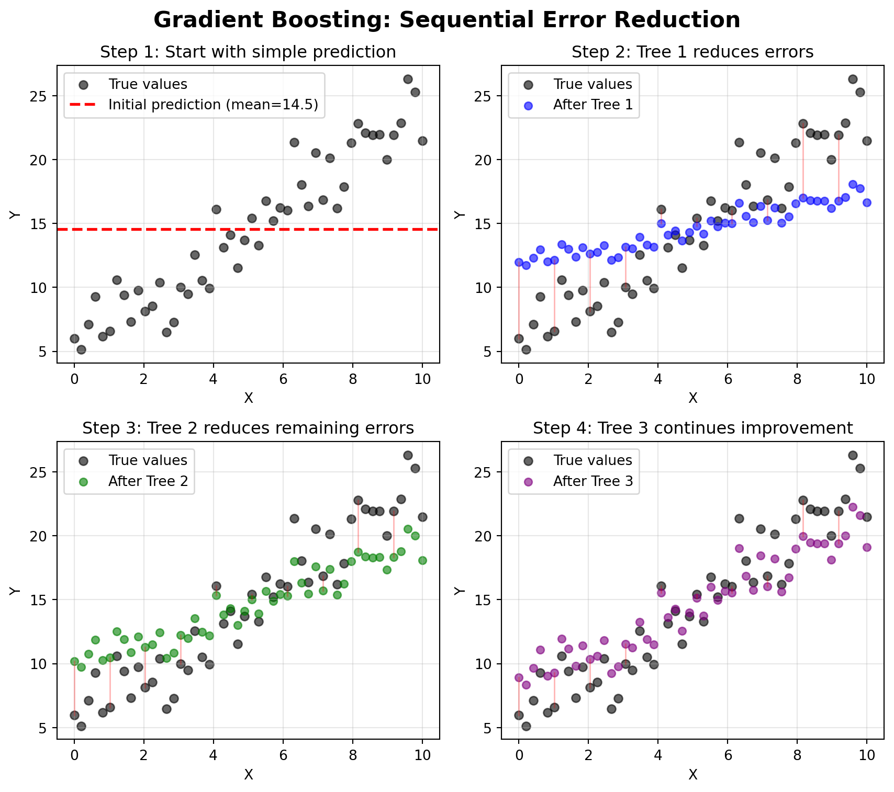
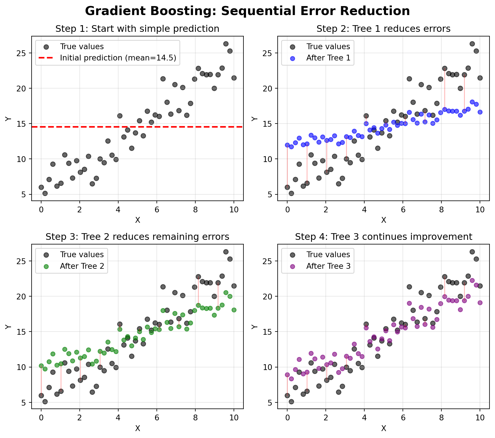
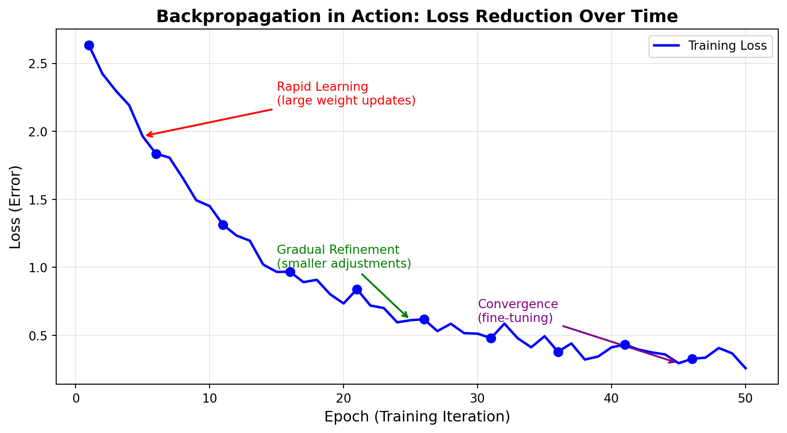

Mean Absolute Error at each step:
Initial (mean): 5.09
After Tree 1: 3.56
After Tree 2: 2.49
After Tree 3: 1.75
Total error reduction: 3.34 (65.7% improvement)You’ve come a long way in this course. You started as brand new Python programmers, learning the fundamentals of variables, data structures, and control flow. You then mastered data wrangling with pandas—importing, cleaning, transforming, and aggregating real-world datasets. From there, you progressed into machine learning: linear and logistic regression, powerful ensemble methods like random forests, cross-validation and hyperparameter tuning, and unsupervised learning with clustering and PCA. You’ve built a comprehensive data science toolkit that will serve you well throughout your career.
But if you’ve been following recent developments in AI (chatbots that write essays, models that generate realistic images, systems that beat world champions at complex games), you might be wondering: how do those fit into what we’ve learned? What’s the relationship between the random forests you’ve been building and the neural networks powering modern AI systems?
This chapter bridges that gap. We’ll explore modern machine learning algorithms that extend beyond the classical methods you’ve mastered. You’ll see how gradient boosting machines push ensemble methods even further, how neural networks create the foundation for deep learning and generative AI, and how these advanced techniques build directly on concepts you already understand.
This chapter is about exposure, not mastery. We’re not expecting you to become experts in gradient boosting or neural networks in one reading. Instead, we want you to:
Think of this as a guided tour of the machine learning landscape beyond our course boundaries, a preview of what awaits as you continue your data science journey.
By the end of this chapter, you will be able to:
Before we explore new territories, let’s appreciate how far you’ve come. You’ve mastered a comprehensive toolkit of machine learning algorithms:
Linear Regression: Your first predictive model, which finds the best linear relationship between features and a continuous target. You learned about coefficients, R-squared, and how to interpret feature importance through regression weights.
Decision Trees & Random Forests (Regression): Tree-based methods that partition the feature space into regions with similar outcomes. Random forests extend this by building many trees and averaging their predictions, dramatically improving performance and reducing overfitting.
Logistic Regression: Despite its name, this is a classification algorithm that predicts probabilities using the sigmoid function. You learned about log-odds, decision boundaries, and how to evaluate models using ROC curves and confusion matrices.
Decision Trees & Random Forests (Classification): Tree-based classifiers that split data based on feature thresholds to create pure leaf nodes. Random forests again improve single trees by building diverse ensembles and voting on predictions.
Clustering (K-Means): Automatically groups similar observations together without labeled data. You learned about centroids, the elbow method, and how to interpret cluster profiles for business applications.
Dimension Reduction (PCA): Transforms many correlated features into fewer uncorrelated principal components, preserving the most important variation while reducing complexity.
Cross-Validation: Robust methods for estimating model performance using k-fold and stratified splits, ensuring your models generalize to new data.
Hyperparameter Tuning: Systematic approaches (grid search, random search) to find optimal model configurations.
Feature Engineering: Creating new features, handling missing data, encoding categorical variables, and scaling features to improve model performance.
These techniques aren’t just academic exercises. They’re the workhorse algorithms of professional data science:
The algorithms we’ll explore in this chapter build directly on these foundations. Gradient boosting extends tree-based methods. Neural networks generalize logistic regression’s architecture. Deep learning requires the same cross-validation and evaluation rigor you’ve already learned.
In professional practice, classical methods (linear models, logistic regression, random forests, gradient boosting) solve 80% of business problems. The advanced techniques we’ll discuss in this chapter are powerful, but they’re not always necessary. As you learn about these modern methods, remember that simpler often wins when it comes to interpretability, maintenance, and deployment complexity.
Now that we’ve recapped the solid foundation you’ve built, let’s explore what comes next. We’ll start with algorithms that extend what you already know (like taking random forests to the next level with gradient boosting), then venture into neural networks and deep learning, and finally connect these concepts to the generative AI systems making headlines today. Each section builds on your existing knowledge, showing you how modern ML techniques are evolutionary steps rather than completely foreign concepts.
You’ve already mastered random forests, which build many trees in parallel and average their predictions. Gradient boosting machines (GBMs) take a fundamentally different approach: they build trees sequentially, where each new tree tries to correct the mistakes of the previous trees.
Random Forests: Imagine asking 100 experts a question independently, then averaging their answers. Each expert thinks separately, and diversity comes from giving them slightly different information.
Gradient Boosting: Imagine asking one expert, then asking a second expert to focus specifically on cases where the first expert was wrong, then asking a third expert to focus on remaining mistakes, and so on. Each expert specializes in fixing previous errors.
The algorithm follows this sequential process:
Each new tree “boosts” the model by focusing on the observations that previous trees struggled with. The “gradient” part comes from using gradient descent to minimize the loss function, similar to how neural networks learn (which we’ll discuss shortly).
Let’s visualize this process with a simple example:

Mean Absolute Error at each step:
Initial (mean): 5.09
After Tree 1: 3.56
After Tree 2: 2.49
After Tree 3: 1.75
Total error reduction: 3.34 (65.7% improvement)The visualization shows how each tree focuses on the remaining errors (shown as red lines between predictions and true values). Notice how the predictions get progressively closer to the true values with each additional tree. This is the essence of boosting: each tree learns from the mistakes of the ensemble so far.
| Aspect | Random Forests | Gradient Boosting |
|---|---|---|
| Tree Building | Parallel (all at once) | Sequential (one at a time) |
| Learning Focus | Each tree learns from random subset | Each tree learns from previous mistakes |
| Tree Depth | Typically deep trees (fully grown) | Typically shallow trees (weak learners) |
| Prediction | Average/vote across all trees | Weighted sum of all trees |
| Training Speed | Fast (parallelizable) | Slower (sequential) |
| Overfitting Risk | Lower (averaging reduces variance) | Higher (needs careful tuning) |
| Performance | Excellent | Often slightly better with tuning |
| Interpretability | Moderate (feature importance) | Moderate (feature importance) |
While the core concept of gradient boosting has existed since the 1990s, recent implementations have made it incredibly powerful and efficient:
XGBoost (Extreme Gradient Boosting)
LightGBM (Light Gradient Boosting Machine)
CatBoost (Categorical Boosting)
Let’s see how gradient boosting compares to random forests using the California Housing dataset, a regression problem with 20,000+ observations where XGBoost’s sequential learning really shines:
import pandas as pd
import numpy as np
from sklearn.datasets import fetch_california_housing
from sklearn.model_selection import train_test_split
from sklearn.ensemble import RandomForestRegressor
from xgboost import XGBRegressor
from sklearn.metrics import mean_squared_error, r2_score
# Load California housing data (20,640 observations)
housing = fetch_california_housing()
X = pd.DataFrame(housing.data, columns=housing.feature_names)
y = housing.target # Median house value in $100,000s
# Split data
X_train, X_test, y_train, y_test = train_test_split(
X, y, test_size=0.2, random_state=42
)
# Random Forest (default parameters)
rf_model = RandomForestRegressor(n_estimators=100, random_state=42, n_jobs=-1)
rf_model.fit(X_train, y_train)
rf_pred = rf_model.predict(X_test)
# XGBoost (default parameters)
xgb_default = XGBRegressor(n_estimators=100, random_state=42, n_jobs=-1)
xgb_default.fit(X_train, y_train)
xgb_default_pred = xgb_default.predict(X_test)
# XGBoost (tuned parameters - showing its potential)
xgb_tuned = XGBRegressor(
n_estimators=300, # More trees
learning_rate=0.05, # Slower learning for better accuracy
max_depth=5, # Moderate tree depth
subsample=0.8, # Row sampling (like RF)
colsample_bytree=0.8, # Column sampling (like RF)
random_state=42,
n_jobs=-1
)
xgb_tuned.fit(X_train, y_train)
xgb_tuned_pred = xgb_tuned.predict(X_test)
# Compare performance
print("Model Comparison (Lower RMSE is better):")
print("=" * 50)
print(f"Random Forest RMSE: {np.sqrt(mean_squared_error(y_test, rf_pred)):.4f}")
print(f"Random Forest R²: {r2_score(y_test, rf_pred):.4f}")
print()
print(f"XGBoost (default) RMSE: {np.sqrt(mean_squared_error(y_test, xgb_default_pred)):.4f}")
print(f"XGBoost (default) R²: {r2_score(y_test, xgb_default_pred):.4f}")
print()
print(f"XGBoost (tuned) RMSE: {np.sqrt(mean_squared_error(y_test, xgb_tuned_pred)):.4f}")
print(f"XGBoost (tuned) R²: {r2_score(y_test, xgb_tuned_pred):.4f}")Model Comparison (Lower RMSE is better):
==================================================
Random Forest RMSE: 0.5053
Random Forest R²: 0.8051
XGBoost (default) RMSE: 0.4718
XGBoost (default) R²: 0.8301
XGBoost (tuned) RMSE: 0.4692
XGBoost (tuned) R²: 0.8320This example demonstrates two key points:
The improvement might seem modest (a few percentage points in R² or reduction in RMSE), but in real-world applications, these gains can translate to substantial business value. However, this comes at the cost of increased complexity and tuning effort.
Use Random Forests when:
Use Gradient Boosting when:
Start with Random Forests, get a baseline, then experiment with gradient boosting if you need incremental performance gains.
If you decide to explore gradient boosting further, these are the most important hyperparameters to understand:
n_estimators: Number of trees to build (typical range: 100-1000)learning_rate (or eta): How much each tree contributes (typical range: 0.01-0.3, lower is often better)max_depth: Maximum depth of each tree (typical range: 3-10, shallower than random forests)subsample: Fraction of observations to use for each tree (typical: 0.8, adds randomness like random forests)colsample_bytree: Fraction of features to use for each tree (typical: 0.8, also adds randomness)The combination of n_estimators and learning_rate is particularly important: more trees with a smaller learning rate often works best, but takes longer to train.
If you’ve heard about AI breakthroughs (ChatGPT writing essays, DALL-E generating images, AlphaGo beating world champions), you’ve heard about neural networks. Despite the buzz, neural networks are conceptually related to something you already know well: logistic regression.
Remember logistic regression? You learned that it:
A neural network does exactly the same thing, but many times over, in layers. Instead of one sigmoid transformation, you might have dozens or hundreds of interconnected transformations, allowing the model to learn complex, non-linear patterns.
A simple neural network has three types of layers:
Input Layer: One node for each feature in your dataset (just like the features in logistic regression).
Hidden Layers: One or more layers where the magic happens. Each node in a hidden layer:
Output Layer: Produces the final prediction. For classification, this might use a sigmoid (binary) or softmax (multiclass) activation. For regression, it might use a linear activation.
Here’s a simple visualization:
%%{init: {'theme':'base', 'themeVariables': { 'fontSize':'16px'}}}%%
graph LR
subgraph Input[" Input Layer <br/>(3 features) "]
X1((X1))
X2((X2))
X3((X3))
end
subgraph Hidden1[" Hidden Layer 1 <br/>(4 nodes) "]
H1((H1))
H2((H2))
H3((H3))
H4((H4))
end
subgraph Hidden2[" Hidden Layer 2 <br/>(3 nodes) "]
H5((H5))
H6((H6))
H7((H7))
end
subgraph Hidden3[" Hidden Layer 3 <br/>(3 nodes) "]
H8((H8))
H9((H9))
H10((H10))
end
subgraph Output[" Output Layer <br/>(1 prediction) "]
Y((Y))
end
X1 -.-> H1
X1 -.-> H2
X1 -.-> H3
X1 -.-> H4
X2 -.-> H1
X2 -.-> H2
X2 -.-> H3
X2 -.-> H4
X3 -.-> H1
X3 -.-> H2
X3 -.-> H3
X3 -.-> H4
H1 -.-> H5
H1 -.-> H6
H1 -.-> H7
H2 -.-> H5
H2 -.-> H6
H2 -.-> H7
H3 -.-> H5
H3 -.-> H6
H3 -.-> H7
H4 -.-> H5
H4 -.-> H6
H4 -.-> H7
H5 -.-> H8
H5 -.-> H9
H5 -.-> H10
H6 -.-> H8
H6 -.-> H9
H6 -.-> H10
H7 -.-> H8
H7 -.-> H9
H7 -.-> H10
H8 ==> Y
H9 ==> Y
H10 ==> Y
style Input fill:#e1f5ff
style Hidden1 fill:#fff4e1
style Hidden2 fill:#ffe4e1
style Hidden3 fill:#e8e1ff
style Output fill:#e8f5e9
Each arrow represents a weight (parameter) that the model learns during training. This network has:
This might seem like a lot compared to logistic regression’s 4 parameters (3 coefficients + 1 intercept), but it’s tiny compared to modern deep learning models that have millions or billions of parameters. The additional layers allow the network to learn increasingly complex, hierarchical representations of the data.
Deep learning simply means using neural networks with many hidden layers (typically 10-1000+ layers). More layers allow the network to learn increasingly abstract representations:
This hierarchical learning is why deep learning excels at complex tasks like image recognition, natural language processing, and speech recognition.
Neural networks learn through a process called backpropagation, which works like this:
An epoch is one complete pass through the entire training dataset. If you have 1,000 training examples and train for 50 epochs, the network will see all 1,000 examples 50 times, updating weights after each small batch of data. More epochs generally lead to better learning (up to a point), but too many can cause overfitting.
This is conceptually similar to how we found the best coefficients for linear regression, but applied to potentially millions of parameters across many layers.
Here’s a visualization of the backpropagation process:
%%{init: {'theme':'base', 'themeVariables': { 'fontSize':'14px'}}}%%
graph LR
subgraph Step1[" "]
A[Input Data] -->|Forward Pass| B[Neural Network]
B --> C[Predictions]
end
subgraph Step2[" "]
C -->|Compare| D[Actual Values]
D --> E[Calculate Loss/Error]
end
subgraph Step3[" "]
E -->|Backward Pass<br/>Compute Gradients| F[How much did<br/>each weight<br/>contribute to error?]
end
subgraph Step4[" "]
F -->|Update Weights<br/>Gradient Descent| G[Adjust weights to<br/>reduce error]
end
G -->|Repeat for<br/>many epochs| A
style A fill:#e1f5ff
style B fill:#fff4e1
style C fill:#ffe4e1
style D fill:#e8f5e9
style E fill:#ffebcc
style F fill:#e8e1ff
style G fill:#f0e1ff
style Step1 fill:#ffffff,stroke:#999,stroke-width:2px
style Step2 fill:#ffffff,stroke:#999,stroke-width:2px
style Step3 fill:#ffffff,stroke:#999,stroke-width:2px
style Step4 fill:#ffffff,stroke:#999,stroke-width:2px
Let’s also visualize how the loss decreases during training:

Initial Loss: 2.633
Final Loss: 0.258
Loss Reduction: 2.375 (90.2% improvement)The first diagram shows the cycle of forward pass, error calculation, backward pass, and weight updates. The next plot demonstrates how backpropagation successfully reduces the loss over many training epochs (iterations through the data). Notice three distinct phases:
To see neural networks in action, we’ve included an interactive tutorial notebook that walks through two complete examples:
You can run these examples directly in Google Colab, where you’ll see how neural networks learn from data, how loss decreases during training, and how different architectures excel at different tasks.
👉 Open the Deep Learning Basics Tutorial in Colab
This tutorial covers:
Part 1: Regression Example - Building a feed-forward neural network to predict housing prices from 13 features. You’ll see how backpropagation reduces error over many training epochs and compare performance to traditional regression methods.
Part 2: CNN Classification Example - Building a convolutional neural network to recognize handwritten digits. You’ll see how CNNs achieve 99%+ accuracy on the classic MNIST dataset and watch the trained network classify morphing digit animations in real-time.
Both examples include complete code that you can run, modify, and experiment with. The notebook demonstrates key concepts like:
Additional Resources: This tutorial is adapted from MIT’s Deep Learning course. For more advanced examples including RNNs for text generation, GANs for image synthesis, and deep reinforcement learning, explore the MIT Deep Learning repository.
The key takeaway from these examples? Neural networks excel when you have large datasets and complex, non-linear relationships. For the housing regression problem (506 observations, simple tabular data), you’d likely get similar or better results with random forests or gradient boosting. But for image classification (60,000 training images, spatial patterns), CNNs dramatically outperform classical methods. This reinforces the guidance in the callout below about when to choose neural networks versus classical ML.
Neural Networks Excel When:
Classical ML (Random Forests, XGBoost) Excel When:
For most business problems with structured data (customer records, transaction data, sensor data), classical ML methods often outperform neural networks while being easier to interpret and deploy.
Deep learning has exploded in the last decade due to three key factors:
Big Data: Companies like Google, Facebook, and Amazon collect billions of labeled examples (images, text, clicks). Deep learning needs lots of data to learn effectively.
Computational Power: GPUs (graphics processing units) can perform the massive matrix multiplications required by neural networks much faster than CPUs. Cloud computing makes this power accessible to everyone.
Algorithmic Innovations: Techniques like dropout (prevents overfitting), batch normalization (stabilizes training), residual connections (enables very deep networks), and attention mechanisms (allows models to focus on relevant parts of the input) have made training large networks feasible. Attention, in particular, revolutionized how neural networks handle sequential data by allowing the model to dynamically weigh the importance of different input elements. This breakthrough powers modern transformers.
The neural networks we’ve described so far are discriminative models. They learn to classify or predict based on input features. For example, given an image, a discriminative model might classify it as “cat” or “dog.” Given customer data, it might predict whether they’ll make a purchase.
But recent breakthroughs involve a fundamentally different type of neural network: generative models. Instead of classifying or predicting, generative models create entirely new content. They can generate realistic images from text descriptions, write coherent essays, compose music, or even generate synthetic data for training other models. This shift from “understanding and classifying” to “creating and generating” represents one of the most exciting frontiers in AI.
The generative AI revolution has been driven by several innovative architectures, each with different strengths:
Generative Adversarial Networks (GANs): Two neural networks compete. One generates fake data (like images), while the other tries to detect fakes. This competition produces incredibly realistic generated images, videos, and more.
Transformers: A neural network architecture (developed by Google in 2017) that revolutionized natural language processing. Transformers power:
Diffusion Models: Generate images by gradually removing noise, producing stunning results (Stable Diffusion, Midjourney).
These models have billions of parameters and are trained on massive datasets (like the entire internet), requiring millions of dollars in computational resources. They represent the cutting edge of AI research and commercial applications.
The generative AI models described above represent a fundamental shift in how we think about machine learning. These are often called foundation models, which are large-scale models pre-trained on vast amounts of data and can be adapted for many different tasks. They’re a different beast compared to the models you’ve been building in this course.
The Traditional ML Workflow you’ve learned involves:
flowchart TD
A[Collect Task-Specific Data] --> B[Engineer Features]
B --> C[Train Model from Scratch]
C --> D[Evaluate Performance]
D --> E{Good Enough?}
E -->|No| B
E -->|Yes| F[Deploy Model]
style A fill:#e1f5dd
style B fill:#e1f5dd
style C fill:#fff4cc
style D fill:#fff4cc
style E fill:#ffe6e6
style F fill:#d4e6f1
The Foundation Model Workflow is fundamentally different:
flowchart TD
A[Large Organization Trains Foundation Model] --> B[Massive Datasets + Compute<br/>Billions of $]
B --> C[Pre-trained Model Available]
C --> D[You Access Model]
D --> E[API Access]
D --> F[Download Model]
E --> G[Adapt to Your Task]
F --> G
G --> H[Fine-tuning<br/>on your data]
G --> I[Prompt Engineering<br/>no training]
G --> J[Direct API Usage<br/>no training]
H --> K[Deploy Solution]
I --> K
J --> K
style A fill:#ffcccc
style B fill:#ffcccc
style C fill:#d4e6f1
style D fill:#e1f5dd
style E fill:#e1f5dd
style F fill:#e1f5dd
style G fill:#fff4cc
style H fill:#fff4cc
style I fill:#fff4cc
style J fill:#fff4cc
style K fill:#d4e6f1
This introduces the concept of transfer learning, which means leveraging knowledge from a model trained on one task to solve a different but related task. Instead of training GPT-4 yourself (which would cost millions), you use the already-trained model through ChatGPT’s API. Instead of training an image recognition model from scratch, you might fine-tune a pre-trained vision model on your specific images.
In professional practice, you typically interact with foundation models in three ways:
Direct API Usage: Call models like GPT-4, Gemini, or Claude through APIs for tasks like text generation, summarization, or question answering (no training required)
Fine-tuning: Take a pre-trained model and adapt it to your specific domain by training it on your data (requires much less data and compute than training from scratch)
Prompt Engineering: Carefully crafting the input (prompts) to guide the model’s behavior without any training at all
The barrier to entry has shifted from “Can I train a good model?” to “Can I effectively leverage these powerful pre-trained models?”
This represents a democratization of AI—you don’t need millions of dollars in compute to build powerful AI applications. You just need to know how to effectively use and adapt these foundation models for your specific needs.
We won’t dive deep into generative AI or foundation models in this course (that would require an entire course by itself). But understanding that these powerful systems are built on the same fundamental neural network principles we’ve discussed helps demystify them. They’re not magic; they’re just very large, very well-trained neural networks with clever architectures. And increasingly, they’re tools you can access and use without training them yourself.
Beyond gradient boosting and neural networks, several other algorithms are worth knowing about, even if we won’t cover them in depth:
Now that you’ve been introduced to a wide landscape of machine learning algorithms—from the linear regression you mastered early on to gradient boosting and neural networks—it’s valuable to step back and recognize the common threads that connect them all. Understanding these unifying principles will help you make smarter decisions about which algorithm to use and when.
Every machine learning algorithm, whether simple or complex, must navigate the fundamental tension between bias and variance. A model with high bias is too simple. It underfits the data by missing important patterns. Think of a linear regression trying to capture a non-linear relationship; it’s just not flexible enough. On the other hand, a model with high variance is too complex. It overfits by memorizing noise in the training data rather than learning generalizable patterns. An unpruned decision tree that perfectly predicts every training example but fails on new data exemplifies this problem.
What’s fascinating is how different algorithms tackle this tradeoff in fundamentally different ways. Linear models typically suffer from high bias unless you engineer many features, because they can only learn linear relationships. Decision trees go the opposite direction. They have high variance and easily overfit unless constrained through pruning or ensemble methods. Random forests brilliantly reduce variance by averaging predictions across many trees, each trained on different subsets of data. Gradient boosting takes yet another approach: it reduces bias by iteratively building new models that correct the mistakes of previous ones. Neural networks, with their many layers and parameters, can suffer from either problem depending on architecture and training, which is why regularization techniques like dropout are so critical.
There’s no single “best” way to balance bias and variance. Different algorithms make different tradeoffs, and the right choice depends on your data, your problem, and your constraints.
Regardless of which algorithm you choose, the evaluation fundamentals you learned earlier in this course remain constant. Whether you’re fitting a simple logistic regression or a complex deep neural network, you must always use proper train-test splits to get honest estimates of performance. K-fold cross-validation provides robust estimates across all algorithms, helping you understand whether your model’s performance is stable or depends heavily on which examples happen to be in your test set.
Choosing the right metric also matters across the board. Accuracy might suffice for balanced classification problems, but RMSE for regression or ROC-AUC for imbalanced classification often tell you more about real-world performance. And regardless of your algorithm’s complexity, you must always watch for the telltale sign of overfitting: training performance that far exceeds test performance. These principles aren’t algorithm-specific. They’re fundamental to all supervised machine learning.
Here’s a truth that might surprise you: in real-world applications, investing time in thoughtful feature engineering often improves your model more than switching from random forest to XGBoost or even to neural networks. Creating domain-specific features that capture expert knowledge can unlock patterns that even the most sophisticated algorithms might miss. Properly handling missing data prevents information loss that no algorithm can recover. Ensuring features are properly scaled allows algorithms like neural networks and k-NN to work as designed. And applying dimensionality reduction techniques like PCA can simultaneously improve both speed and performance by removing noisy, redundant features.
This doesn’t mean algorithm choice is irrelevant. It clearly matters, as we’ve discussed throughout this chapter. But it does mean that a random forest with well-engineered features will almost always outperform a neural network with poorly prepared data. Don’t fall into the trap of thinking the latest, most complex algorithm is always the answer. Often, the biggest performance gains come from understanding your data deeply and crafting features that help your model learn.
You’ve now been introduced to the major families of machine learning algorithms that professionals use to solve real-world problems. From classical supervised learning methods like linear regression, logistic regression, decision trees, and random forests—which you’ve practiced extensively—to advanced ensemble methods like gradient boosting (XGBoost, LightGBM, CatBoost), you understand the core of modern predictive modeling. You’ve also glimpsed the world of neural networks and deep learning, including feedforward networks, CNNs, RNNs, and the Transformers that power today’s generative AI. And through clustering and PCA, you’ve explored unsupervised learning techniques for finding hidden patterns in data.
This knowledge represents a comprehensive foundation in machine learning. But it’s exactly that: a foundation. Each topic we’ve introduced in this chapter could fill entire courses or books. The next chapter will provide you with a detailed roadmap for where to go from here, including specific learning paths tailored to different interests, curated resources to deepen your expertise, and career directions you might pursue based on what excites you most about machine learning.
As you move forward in your machine learning journey, keep these essential insights in mind:
Gradient boosting methods like XGBoost and LightGBM often provide the best performance on structured, tabular data, especially after careful hyperparameter tuning. If you’re working with business data in rows and columns, these should be in your toolkit.
Neural networks and deep learning truly shine with unstructured data like images, text, and audio, as well as with very large datasets. However, they often don’t outperform gradient boosting on typical tabular business data, despite their popularity and power in other domains.
Classical methods like random forests and logistic regression remain remarkably powerful and should always be your starting point. They’re easier to interpret, faster to train, and often perform nearly as well as more complex methods while requiring less tuning and computational resources.
Here’s a truth that bears repeating: algorithm choice matters less than you might think. Proper feature engineering, rigorous cross-validation, and thoughtful hyperparameter tuning typically improve performance more than switching from one algorithm to another. Focus on these fundamentals before chasing the latest algorithm.
Generative AI systems like ChatGPT and DALL-E represent the frontier of deep learning, built on massive neural networks with billions of parameters. They demonstrate what’s possible with sufficient scale, but they also build on the same fundamental principles you’ve learned in this course.
Finally, always start simple and add complexity only when needed. The best model isn’t the most sophisticated one. It’s the simplest one that achieves your performance requirements while meeting your constraints for interpretability, speed, and maintainability. Occam’s Razor applies to machine learning too.
These questions will help you synthesize what you’ve learned and think critically about algorithm choice:
Compare and Contrast: How is gradient boosting fundamentally different from random forests in how it builds its ensemble? Consider their training processes, how they combine individual models, and the types of errors each addresses. When might you choose one over the other in a real-world scenario?
Neural Network Intuition: Explain how a neural network relates to logistic regression. What does adding hidden layers enable the model to do that logistic regression cannot? Think about decision boundaries, feature interactions, and representational capacity.
Practical Tradeoffs: Why don’t we use deep learning for every problem? What are the practical constraints (computational, data-related, and organizational) that make classical ML methods often preferable for business applications? Consider training time, interpretability needs, dataset sizes, and deployment complexity.
Generative AI Connection: How do the neural network principles discussed in this chapter relate to generative AI systems like ChatGPT? What additional components or training approaches make generation possible? Think about the fundamental difference between prediction and generation tasks.
If you’re excited to dive deeper into these advanced methods, here’s where to start your journey. Don’t feel pressured to pursue all of these. Pick the path that aligns with your interests and goals.
For Gradient Boosting Mastery: The XGBoost documentation and tutorials (https://xgboost.readthedocs.io/) provide excellent hands-on resources, while Corey Wade’s “Hands-On Gradient Boosting with XGBoost and Scikit-learn” offers comprehensive coverage with practical examples.
For Neural Networks and Deep Learning: Fast.ai’s Practical Deep Learning for Coders (https://course.fast.ai/) takes a top-down, code-first approach that gets you building quickly. If you prefer more theoretical grounding, Andrew Ng’s Deep Learning Specialization on Coursera provides systematic coverage of fundamentals. François Chollet’s “Deep Learning with Python” (written by the creator of Keras) bridges theory and practice beautifully.
For Generative AI Exploration: Start with OpenAI’s GPT documentation and API (https://platform.openai.com/docs/) to understand how to use these models. David Foster’s “Generative Deep Learning” covers the theory behind generative models. The Hugging Face Transformers library and documentation (https://huggingface.co/docs/transformers/) will help you implement state-of-the-art models.
For Practical Application and Community Learning: Kaggle competitions (https://www.kaggle.com/competitions) let you apply your skills to real problems and learn from others’ solutions. There’s no better way to improve than seeing how top practitioners approach problems. Google’s Machine Learning Crash Course (https://developers.google.com/machine-learning/crash-course) offers another solid, free resource for reinforcing fundamentals.
You’ve built a strong foundation in machine learning fundamentals. The algorithms discussed in this chapter represent the next level—techniques that build directly on what you’ve learned and extend your capabilities to handle increasingly complex problems. They’re not magic, and they’re not fundamentally different from what you already know. They’re natural extensions of the principles you’ve mastered: learning patterns from data, balancing bias and variance, and validating performance rigorously.
In the next chapter, we’ll chart a detailed course for your continued learning journey beyond this course, helping you navigate the vast landscape of machine learning specializations, career paths, and resources available to you.